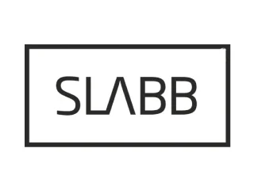
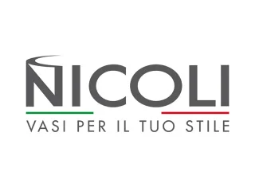

Materiały. Pomysły.
Dobry kierunek.
Markin to miejsce dla osób, które chcą świadomie zaplanować otoczenie domu. Łączymy znajomość materiałów z doradztwem i spojrzeniem na całą przestrzeń.
Wszystko zaczyna się od rozmowy.
Łączymy materiały, pomysły i praktyczne doradztwo. Pomagamy klientom indywidualnym, inwestorom i architektom planować otoczenie domu: od ścieżek i podjazdów po taras, ogrodzenie oraz detale ogrodowe. W jednym miejscu dobierzesz rozwiązania i omówisz ich wycenę.
Proponujemy kostki brukowe, płyty betonowe i ceramiczne, ogrodzenia oraz materiały do małej architektury. Wspieramy dobór rozwiązań, przygotowujemy indywidualne kosztorysy i realizujemy zamówienia.

inwestorów i architektów.
Blisko pomysłów
i inspiracji.
Materiały archiwalne mogą przedstawiać wcześniejsze dane adresowe. Aktualny adres punktu: Radlin 193C, 26-008 Górno.
Materiały od specjalistów.
Kostki, płyty i elementy ogrodowe
Nawierzchnie i mała architektura
Otoczenie domu i ogrodu
GatigoBramy i ogrodzenia
Płyty tarasowe
Kostki brukowe
Ogrodzenia
Oświetlenie ogrodowe
Poz-BrukPłyty nawierzchniowe

SLABBOgrodzenia i mała architektura

NicoliDonice i wyposażenie ogrodu
Future DesignDonice
COM-BETOgrodzenia betonowe